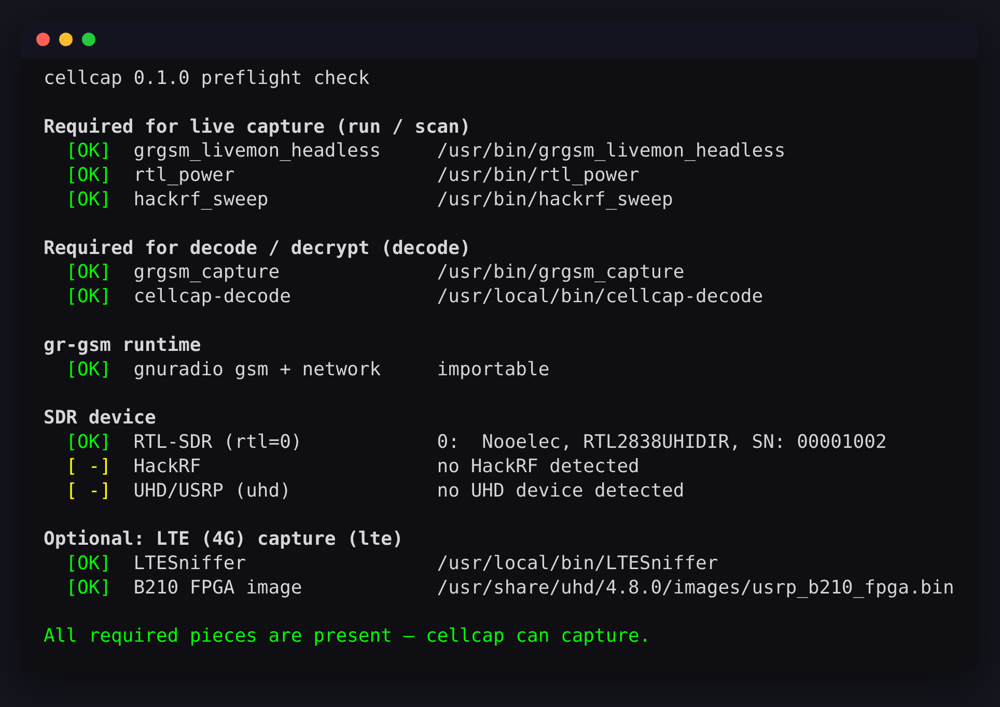
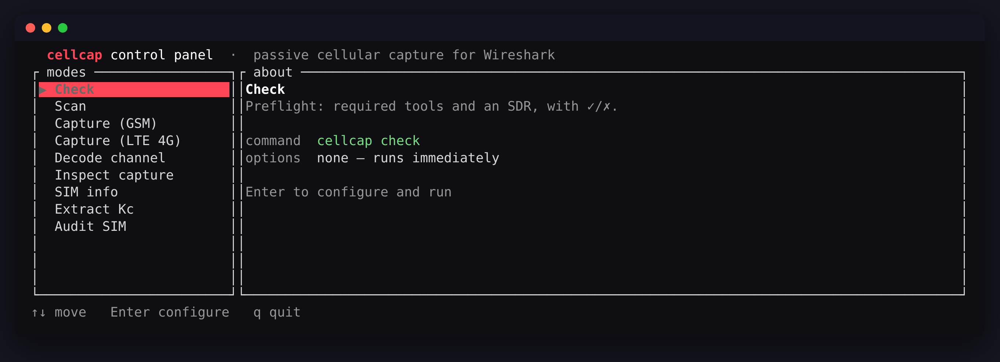
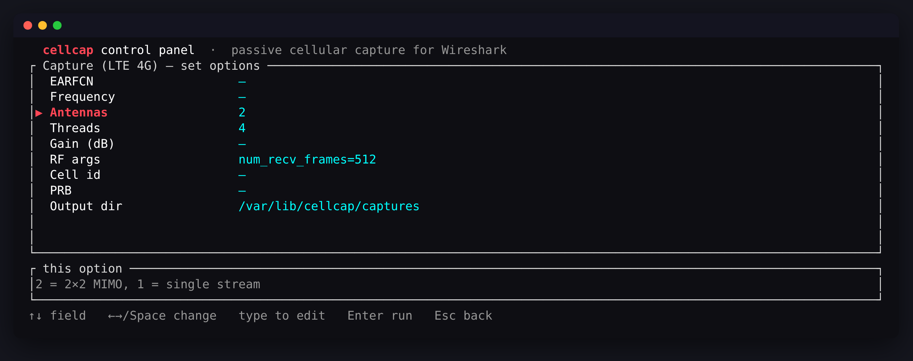
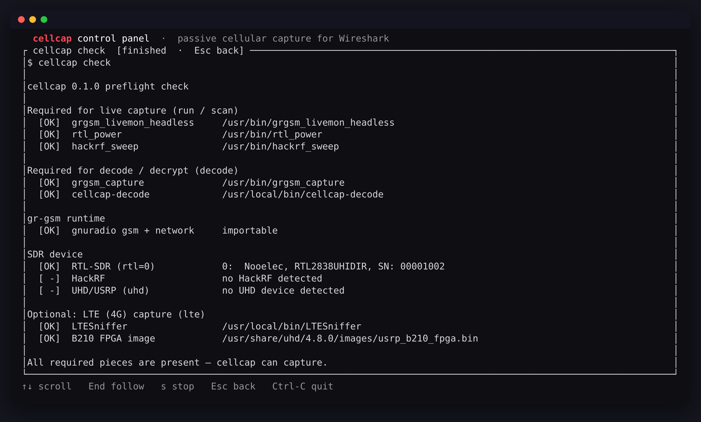
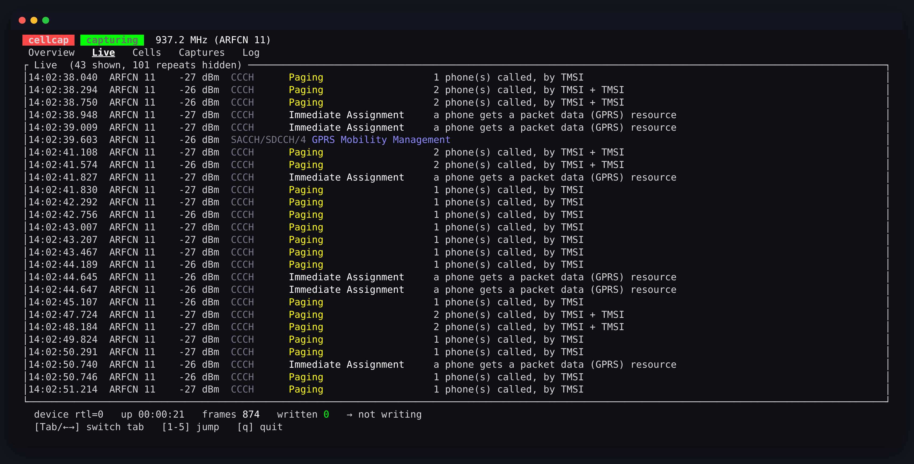
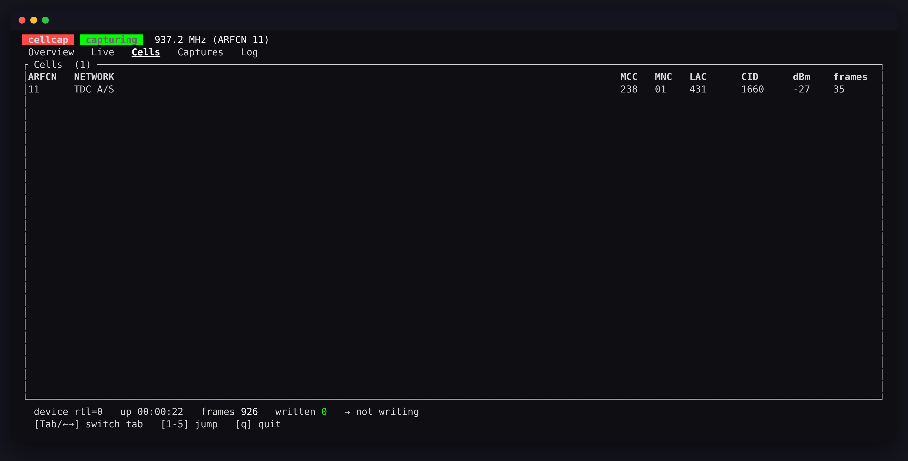

This book takes you from “what is a cell tower” to reading live signalling off the air and validating it in Wireshark. You do not need to read it front to back — follow the track that fits you.
| Track | Read this for… | Start at |
|---|---|---|
| BEGINNER | The big picture, plain-language analogies, how the tools fit together, your first capture. | Part I & the Executive Summary, then Ch. 10–13. |
| INTERMEDIATE | Reading channels and message types, flow chains, Wireshark filters, the SIM tools. | Part IV & Part V. |
| PRO | Deep packet dissection, security/attacks, multi-RAT (LTE/3G/5G), standards references. | Part IV, VI & VII, Appendices. |
Throughout, a badge marks the depth of a section — B foundational, I hands-on, P advanced — and coloured boxes flag things worth stopping for:
cellcap checkWhat a mobile network is, how it is built, and the language — identities, channels, messages — you need before a single byte makes sense.
If you only read one page, read this one.
Every mobile phone is a two-way radio. To stay reachable, it constantly listens to nearby cell towers, which never stop broadcasting a kind of public notice-board: “this is network X, here is how to talk to me, and here is a list of phones I’m trying to reach right now.” cellcap is a tool that listens to that notice-board with an inexpensive radio and writes down what it hears, so you can open it later in Wireshark — the standard tool network engineers use to inspect traffic — and study it.
| You can see (downlink, in the clear) | You cannot see (without more) |
|---|---|
| The network’s identity and configuration (operator, area, cell, neighbour list). | What phones send (uplink) — cellcap receives only the tower’s downlink. |
| Paging: which phones are being reached (by temporary or, sometimes, permanent ID). | Encrypted voice/data once ciphering starts — unless you hold the session key. |
| Channel grants (who is told to move to a private channel). | Call content or the words of an SMS on a normal network. |
| Early signalling on a combined control channel: location updates, authentication challenges, ciphering commands. | Traffic that frequency-hops across many channels at once (not dehopped here). |
Part I teaches the vocabulary. Part II sets up the tools. Part III drives cellcap. Part IV — the heart — teaches you to read what comes off the air, message by message. Part V is Wireshark. Part VI covers security, privacy and law. Part VII looks beyond 2G to LTE, 3G and 5G. The appendices are a glossary, a message dictionary, a command cheat-sheet and a full reference list.
“G” means generation. Each is a different radio technology; they coexist, and a phone drops to an older one when a newer one is unavailable. cellcap decodes 2G (GSM) natively and orchestrates other tools for 4G (LTE); 3G and 5G are covered in Part VII.
| Gen | Name | Air interface | Carries | Passive capture reality |
|---|---|---|---|---|
| 2G | GSM | TDMA/FDMA, GMSK | Voice, SMS; data via GPRS/EDGE | Fully practical — this guide’s focus. |
| 3G | UMTS | WCDMA (code division) | Voice + Mbit/s data | Impractical passively (spread spectrum). Ch 30. |
| 4G | LTE | OFDMA, all-IP | Data (VoLTE for voice) | Downlink control plane is reachable (LTESniffer). Ch 29. |
| 5G | NR | OFDMA, flexible numerology | Everything, faster | Research-grade, file-first. Ch 31. |
A GSM network is a chain from the phone in your hand to the databases that know who you are. Understanding the boxes tells you which box is talking when you see a message.
| Box | Full name | Job (in plain terms) |
|---|---|---|
| MS | Mobile Station | The phone (ME, Mobile Equipment) plus the SIM card that proves who you are. |
| BTS | Base Transceiver Station | The tower/radio. What you actually receive over the air (the Um interface). |
| BSC | Base Station Controller | Manages many BTSs — channels, handovers. |
| MSC | Mobile Switching Centre | Connects calls; the telephone exchange of the mobile world. |
| VLR | Visitor Location Register | Temporary record of who is in this area right now (hands out TMSIs). |
| HLR | Home Location Register | The master database of all the operator’s subscribers. |
| AuC | Authentication Centre | Holds the secret key (Ki) per SIM; produces the challenges that prove a SIM is genuine. |
| SGSN/GGSN | Serving / Gateway GPRS Support Node | The packet-data path to the internet (GPRS/EDGE). |
Cellular networks are obsessed with identity. Knowing the identifiers — and which are permanent, which temporary, which personal — is the single most useful thing when reading captures, and it is central to both privacy and attacks.
| ID | Stands for | What it identifies | Lifetime | Seen on the air? |
|---|---|---|---|---|
| IMSI | International Mobile Subscriber Identity | The SIM (the subscriber) — MCC+MNC+MSIN, up to 15 digits | Permanent | Rarely, and only when unavoidable. Sensitive. |
| TMSI | Temporary Mobile Subscriber Identity | A short-lived stand-in for the IMSI in one area | Minutes–hours | Routinely (this is the point of it). |
| IMEI | International Mobile Equipment Identity | The handset hardware | Permanent | On request (Identity Request). |
| IMEISV | IMEI + Software Version | Handset + firmware | Permanent | On request. |
| MSISDN | the phone number | The subscription’s dialable number | Semi-permanent | No (lives in the core, not the air). |
| LAI | Location Area Identity | MCC+MNC+LAC — the area a phone is registered in | Config | Yes (System Information, LU Accept). |
| CGI | Cell Global Identity | LAI + Cell ID — the exact cell | Config | Yes (System Information 3). |
An IMSI is just digits with structure. The first three are the country (MCC), the next two or three the operator (MNC), the rest the subscriber (MSIN). cellcap resolves the MCC/MNC to a name with its built-in E.212 table — but the mapping is the same one Wireshark and the ITU use.
232 / 01 = Austria / A1 Telekom — so this SIM is an Austrian A1 subscriber, here seen roaming on a Danish network.GSM divides the radio spectrum two ways at once: by frequency (FDMA) and by time (TDMA). On top of that physical grid sit logical channels — named streams for different jobs. This is the grid cellcap tunes into.
Each 200 kHz radio channel has a number, the ARFCN (Absolute Radio-Frequency Channel Number). “ARFCN 11” in band GSM900 is 937.2 MHz downlink. The ARFCN is not the operator — any operator can use any channel; who owns it is announced in the broadcast (Chapter 4).
| Band | Downlink (what cellcap receives) | ARFCNs | Note |
|---|---|---|---|
| GSM 900 | 935–960 MHz | 1–124 | Most common in EU; an RTL-SDR reaches this. |
| GSM 850 | 869–894 MHz | 128–251 | Americas. |
| DCS 1800 | 1805–1880 MHz | 512–885 | Needs a tuner that reaches 1.8 GHz (not all RTLs). |
| PCS 1900 | 1930–1990 MHz | 512–810 | Americas. |
Each carrier is sliced into 8 timeslots (0–7), repeating ~217 times a second. One timeslot’s worth of bits is a burst. A given logical channel uses a particular timeslot in a repeating pattern.
The bursts carry named channels. These names appear constantly in cellcap and Wireshark, so learn them here and refer back from Chapter 19.
| Channel | Name | Carries |
|---|---|---|
| BCCH | Broadcast Control Channel | The cell’s identity & config: System Information 1–4, 13. |
| CCCH | Common Control Channel | Umbrella for PCH + AGCH + RACH. |
| PCH | Paging Channel | “Phone X, I’m looking for you.” (downlink) |
| AGCH | Access Grant Channel | Immediate Assignment — “use this dedicated channel.” (downlink) |
| RACH | Random Access Channel | The phone asking for a channel. Uplink — invisible to cellcap. |
| SDCCH | Standalone Dedicated Control Channel | Signalling before/without a call: location update, authentication, SMS. |
| SACCH | Slow Associated Control Channel | Housekeeping alongside a dedicated channel (power, measurements, SI5/6). |
| TCH | Traffic Channel | The actual voice/data. TCH/F (full-rate), TCH/H (half-rate). |
| FACCH | Fast Associated Control Channel | Urgent signalling by “stealing” traffic bursts (e.g. during call setup/handover). |
| PDTCH | Packet Data Traffic Channel | GPRS/EDGE data (not decoded by this gr-gsm build). |
SDCCH/4). On such a cell, an ordinary cellcap run already captures location updates, authentication and SMS-on-signalling — no separate step needed. Larger cells put SDCCH on other timeslots, which is where cellcap decode comes in (Chapter 15).A decoded message is a stack of layers, each wrapping the next — exactly like TCP/IP, but with cellular names. Wireshark shows you these layers as a tree; cellcap hands Wireshark the bytes via a wrapper called GSMTAP.
| Protocol | “Protocol discriminator” | Handles |
|---|---|---|
| RR — Radio Resource | 0x06 | Channels: System Information, Paging, Immediate Assignment, Ciphering, Channel Release. |
| MM — Mobility Management | 0x05 | Who & where: Location Updating, Authentication, Identity, TMSI reallocation. |
| CC — Call Control | 0x03 | Calls: Setup, Alerting, Connect, Disconnect, Release. |
| SMS | 0x09 | Text messages (CP/RP/TP sub-layers). |
| SS — Supplementary Services | 0x0B | USSD, call forwarding, etc. |
| GMM/SM | 0x08 / 0x0A | GPRS mobility & session management. |
05 08 = MM / Location Updating Request — is exactly what cellcap’s decoder keys on to label events, and what Appendix B tabulates. Learn to spot it in a hex dump and you can read the gist of any frame without a dissector.The radio, the software and the glue. What each piece does, how to choose hardware, and how to confirm it all works before you capture.
cellcap is a small Rust program that orchestrates a chain of other tools and does the housekeeping around them: it finds cells, starts and supervises the demodulator, writes clean capture files, mirrors frames to a remote Wireshark, decodes the SIM, and presents it all in a terminal control panel. It does not itself demodulate radio — that is gr-gsm’s job.
| cellcap IS | cellcap is NOT |
|---|---|
| A passive, receive-only capture & orchestration tool for GSM (and an LTE launcher). | A transmitter, jammer, or base station. It cannot call, text, or interfere. |
| A clean way to produce Wireshark-ready pcapng and live UDP streams. | A replacement for Wireshark’s dissection — it defers to Wireshark. |
| A terminal UI to drive scan / capture / decode / SIM tools. | A decryptor of other people’s traffic. A5 decrypt needs a key you are entitled to. |
A software-defined radio turns radio waves into samples your computer can process. Any SDR that gr-osmosdr supports works; they differ in frequency range, bandwidth and price.
| SDR | Range | Bandwidth | Good for | cost |
|---|---|---|---|---|
| RTL-SDR (R820T) | ~24–1766 MHz | ~2.4 MHz | GSM900/850 2G capture. The cheap entry point (tested here). | € |
| HackRF One | 1 MHz–6 GHz | ~20 MHz | Reaches DCS1800/PCS1900; wider surveys. Half-duplex, 8-bit. | €€ |
| USRP B210 (& clones) | 70 MHz–6 GHz | up to 56 MHz | 2G across all bands, and the base for LTE capture. 12-bit, full-duplex, 2×RX. | €€€ |
usrp_b210_fpga.bin rather than the stock Ettus image. If uhd_usrp_probe fails to load the FPGA, point UHD at the vendor file (--args="fpga=/path/…").Antennas matter. Use an antenna cut for the band (a 900 MHz whip for GSM900). Indoors near a window is usually enough to hear the strongest local cell at −25 to −60 dBm.
On Debian/Ubuntu the core stack is a few packages; cellcap builds with Rust.
# core: demodulator, scan tools, SDR drivers, Wireshark sudo apt install gr-gsm rtl-sdr hackrf uhd-host wireshark # build and install cellcap make release && sudo make install sudo systemctl enable --now cellcap # optional: run as a service
| Component | Package / source | Role |
|---|---|---|
| gr-gsm | apt install gr-gsm | Demodulates GSM; provides grgsm_livemon_headless, grgsm_scanner. |
| cellcap-decode | generated by make install | A patched grgsm_decode (the packaged one is broken on current GNU Radio). |
| UHD | apt install uhd-host libuhd-dev | USRP/B210 driver; uhd_images_downloader fetches the FPGA image. |
| LTESniffer | build out-of-tree (tools/build-ltesniffer.sh) | LTE downlink → MAC-LTE pcap. Needs a B210-class SDR. |
| 5GSniffer | build out-of-tree (tools/build-5gsniffer.sh) | 5G NR PDCCH decoder (research, file-first). |
| Wireshark | apt install wireshark | The dissector & analysis GUI. Has built-in GSM/LTE/GSMTAP support. |
grgsm_decode fix The grgsm_decode shipped with gr-gsm calls a GNU Radio block that moved namespaces, so it crashes. make install generates a fixed copy, cellcap-decode. This matters only for the decode command (Chapter 15).cellcap check BBefore anything else, run the preflight. It is a ticked checklist of every tool and SDR cellcap can use — green means ready, yellow means optional-and-absent, red means a required piece is missing.
cellcap check

cellcap check — required tools, the SDR device, and optional LTE readiness, each with a status glyph.Read it top to bottom: the live-capture tools (gr-gsm, a scan tool), the decode tools, the GNU Radio runtime, which SDR is attached, and whether the optional LTE pieces (LTESniffer, the B210 FPGA image) are present. If a required row is red, install that package and run it again.
Driving the tool: the control panel, finding cells, capturing, mirroring live to Wireshark, decoding dedicated channels, and reading the SIM.
Run cellcap with no arguments (or cellcap ui) to open the control panel: a home menu of every mode, a form to set its options, and a live output pane — all without leaving the terminal. Everything here maps to a command-line subcommand, so anything you learn in the UI works in scripts too.



check inside the panel. Scroll with ↑↓, s stops a running capture, Esc returns.A scan finds which channels carry a real cell. On RTL/HackRF, cellcap sweeps the band for power then briefly decodes each strong channel; on UHD it uses grgsm_scanner.
cellcap scan # GSM900 on the default SDR cellcap scan --band GSM900 --band DCS1800 # several bands cellcap scan --device uhd # USRP/B210
ARFCN FREQUENCY POWER MCC MNC LAC CID NETWORK 11 937.2 MHz 3.2 238 01 431 1660 TDC A/S 94 953.8 MHz -10.1 - - - - (not GSM)
The NETWORK column is resolved from the broadcast MCC/MNC via cellcap’s E.212 table (operator, else country). (not GSM) means the channel has power but no decodable broadcast — a traffic carrier or non-GSM signal. The raw codes are always shown too, so a name change is only ever a one-line edit to the table.
cellcap run captures the broadcast and control channels to pcapng. Give it a channel, or let it scan and pick.
cellcap run --arfcn 11 --output-dir . # one channel, save here, until Ctrl-C cellcap run --plmn 23801 --output-dir . # scan, capture the strongest TDC cell cellcap run --arfcn 11 -i # live dashboard cellcap run --arfcn 11 -i --no-write # watch only, save nothing
The dashboard (-i) has tabs: Overview, Live (the rolling decoded feed), Cells, Captures, Log. The Live feed shows, per message: the time, the channel (BCCH/CCCH/SDCCH/SACCH…), the signal, the decoded event (colour-coded), and its detail — exactly the information you can cross-check against Wireshark.


Prefer a log-friendly view? --stream prints one readable line per message to stdout instead of the dashboard. Both respect --drop-paging (leave others’ paging identities out) and the rotation/size limits.
Because GSMTAP rides on UDP, cellcap can mirror every frame to a Wireshark on another machine — ideal when the SDR host (e.g. a headless DMZ box) has no GUI. Watch it live, with or without saving locally.
cellcap run --arfcn 11 --no-write --gsmtap-udp 172.22.22.20:5555
cellcap run --arfcn 11 -i --gsmtap-udp 172.22.22.20:4729 # dashboard + mirror
On the receiving side there are two ways to catch it:
udp.port == 4729; Wireshark auto-dissects GSMTAP on its registered port.data, so your frames arrive undissected. Set it to gsmtap (Capture → Options → udpdump → gear), or tshark -i udpdump -o extcap.udpdump.payload:gsmtap. There is no pass-through mode — the payload type is the only lever.A plain run captures broadcast/common channels (and, on a combined-C0 cell, the SDCCH/4). To decode a dedicated channel elsewhere — a standalone SDCCH/8 on another timeslot, or a traffic channel — use decode. It records a short IQ file (or takes one you give) and runs the decoder into a pcapng.
cellcap decode --arfcn 11 --mode sdcch8 --timeslot 1
cellcap decode --arfcn 11 --mode bcch-sdcch4 --timeslot 0 --cfile grab.cfile
cellcap decode --arfcn 11 --mode sdcch8 --timeslot 1 \
--cipher-a5 1 --cipher-kc 1234567890ABCDEF # A5 decrypt
Modes: bcch, bcch-sdcch4, sdcch8, tchf, tchh. Decryption happens inside the decoder — Wireshark cannot do A5 itself. Supply the session key Kc with --cipher-kc; the master key Ki cannot be used directly (Chapter 25).
decode works on one fixed channel at a time.With a test SIM in a serial GSM modem, cellcap can read the files you need to decrypt and to filter a capture to your own device — and audit the SIM’s attack surface.
cellcap extract-kc /dev/ttyUSB0 # the A5 session key Kc (+ CKSN) cellcap sim-info /dev/ttyUSB0 # IMSI, Kc, GPRS Kc, TMSI + LAI cellcap audit-sim /dev/ttyUSB0 # toolkit / OTA attack surface
Use the IMSI (or TMSI) to filter a capture to your own phone in Wireshark; pass the Kc to decode --cipher-kc. audit-sim reads the SIM Service Table and flags toolkit/OTA features behind known attacks — above all Data download via SMS-PP, the precondition for Simjacker and WIBattack (Chapter 27).
ModemManager); stop it first so the port is free.cellcap inspect FILE… summarises a capture without an SDR — frame counts by message type and channel, the cells seen, the time span. A quick way to confirm a file holds what you want before opening Wireshark.
cellcap inspect cellcap-gsm-20261127T085130Z.pcapng
Run continuously as a service: settings live in /etc/default/cellcap as the arguments to cellcap run; after a change, systemctl restart cellcap and watch journalctl -u cellcap -f. The service runs as the unprivileged cellcap user (in group plugdev for the SDR). Files land in /var/lib/cellcap/captures, rotated by time and size, with a cap on the directory.
The heart of the book. Byte by byte: the GSMTAP envelope, the channels, a dictionary of every message you’ll meet, a full worked example, and the flow chains that tie them together.
Every frame cellcap emits begins with a fixed 16-byte GSMTAP header, then the layer-3 message. Learn to read the header by eye and you always know which channel, which cell, how strong before Wireshark even opens.
| Offset | Field | Meaning |
|---|---|---|
| 0 | version | Always 02. |
| 1 | header length | In 32-bit words; 04 → 16 bytes. |
| 2 | payload type | 01 = GSM Um (the air interface). |
| 3 | timeslot | 0–7. |
| 4–5 | ARFCN | Channel number (top bits flag uplink/band). |
| 6 | signal | dBm, signed. |
| 7 | SNR | Signal-to-noise. |
| 8–11 | frame number | The TDMA frame counter. |
| 12 | sub-type / channel | The logical channel (0x01 BCCH, 0x02 CCCH, 0x08 SDCCH/8…; +0x80 = SACCH). cellcap’s channel column reads this byte. |
| 13–15 | antenna / subslot / reserved | Minor fields. |
Chapter 5 introduced the channel family; here is what you actually see on each, and the GSMTAP channel byte that identifies it.
| Channel | GSMTAP byte | What appears there | cellcap column |
|---|---|---|---|
| BCCH | 0x01 | System Information 1–4, 13 — the cell’s identity & config. | BCCH |
| CCCH | 0x02 | Paging, Immediate Assignment, some SI (2quater, 13). | CCCH |
| SDCCH/4 | 0x07 | Dedicated signalling on a combined-C0 cell: LU, auth, SMS. | SDCCH/4 |
| SDCCH/8 | 0x08 | The same, on larger cells (other timeslots). | SDCCH/8 |
| SACCH | +0x80 | Alongside a dedicated channel: SI5/6, measurements, power control. | SACCH/… |
| TCH/F, TCH/H | 0x09, 0x0A | Voice/data (ciphered on a real network). | TCH/F |
| PDTCH | 0x0D | GPRS packet data (not decoded by this build). | — |
The messages you will see most, grouped by protocol. The two-byte key (protocol discriminator + message type) is what cellcap labels and Wireshark dissects. A fuller hex table is in Appendix B.
| Type | Message | Carries |
|---|---|---|
| SI 1 | System Information 1 | Cell channel description, RACH control. |
| SI 2 / 2bis / 2ter / 2quater | System Information 2… | Neighbour-cell lists to measure (incl. 3G/4G neighbours). |
| SI 3 | System Information 3 | Cell identity (MCC/MNC/LAC/CID), control-channel layout. The headline frame. |
| SI 4 | System Information 4 | Location area, cell-selection parameters. |
| SI 13 | System Information 13 | GPRS / packet-data parameters. |
| Type | Message | Meaning |
|---|---|---|
| 0x21/0x22/0x24 | Paging Request Type 1 / 2 / 3 | The network reaching 1–4 phones by TMSI/IMSI. |
| 0x3F | Immediate Assignment | “Use this dedicated channel” (grant on AGCH). |
| 0x35 / 0x32 | Ciphering Mode Command / Complete | Start A5 encryption (cellcap shows the algorithm). |
| 0x2E / 0x29 | Assignment Command / Complete | Move to a traffic channel. |
| 0x0D | Channel Release | Done — free the channel (cellcap shows the cause). |
| Key | Message | Meaning |
|---|---|---|
| 05 08 | Location Updating Request | Phone registering in an area. (uplink) |
| 05 02 / 05 04 | LU Accept / Reject | Network’s answer (cellcap shows LAI / cause). |
| 05 12 / 05 14 | Authentication Request / Response | Challenge (RAND) / answer (SRES). |
| 05 18 / 05 19 | Identity Request / Response | “Tell me your IMSI/IMEI.” (cellcap shows which). |
| 05 1A | TMSI Reallocation Command | Hand out a fresh TMSI. |
| 05 24 | CM Service Request | “I want to make a call / send an SMS.” (uplink) |
| 03 05 / 03 01 / 03 07 | Setup / Alerting / Connect | Call setup → ringing → answered. |
| 03 25 / 03 2D | Disconnect / Release | Call teardown. |
| 09 01 | SMS CP-DATA | A text message segment. |
Here is a real frame captured on a Danish TDC cell and mirrored to Wireshark’s udpdump listener — decoded layer by layer, exactly as you would in the field. (The subscriber’s full IMSI is redacted; only the home-network part, which is not personal, is shown.)
0000 00 0c 00 08 67 73 6d 74 61 70 00 00 00 14 00 04 ← udpdump wrapper 0010 0a 0a 0a 23 00 15 00 04 7f 00 00 01 00 19 00 04 0020 00 00 49 93 00 1a 00 04 00 00 15 b3 00 00 00 00 0030 02 04 01 00 00 0b e5 00 00 21 72 e2 02 1a 02 3f ← GSMTAP header 0040 4d 06 21 20 08 29 23 10 96 90 85 18 69 17 05 f4 ← RR Paging Request Type 1 0050 c1 38 6e 77 2f 30 2b
The Exported-PDU tags tell the story of the transport: dissector name 67 73 6d 74 61 70 = “gsmtap” (so the Payload type was set correctly), source 10.10.10.35, destination 127.0.0.1, UDP 18835 → 5555, then an end-of-options marker 00 00 00 00.
02 04 01 00 | 00 0b | e5 | 00 | 00 21 72 e2 | 02 … → version 2, Um, ARFCN 11, −27 dBm, frame number, channel 02 = CCCH. The serving cell is the one you already know from its SI3: TDC A/S · Denmark (238/01).
4d is the L2 pseudo-length; 06 = RR; 21 = Paging Request Type 1. Then two mobile identities are paged:
| # | Bytes | Decode |
|---|---|---|
| 1 | 08 29 23 10 96 90 85 18 69 | len 8; first octet 29 → type 001 = IMSI, odd length. BCD digits = 232 01 … → MCC 232 = Austria, MNC 01 = A1 Telekom Austria. |
| 2 | 17 05 f4 c1 38 6e 77 | IEI 17 (second identity), f4 → type 100 = TMSI, value c1 38 6e 77. |
CCCH Paging 2 phone(s) called, by IMSI + TMSI (permanent identity in the clear) — and in Wireshark it is GSMTAP → RR → Paging Request Type 1 → Mobile Identity (IMSI 23201…) + Mobile Identity (TMSI). The two views line up: that is your validation.Individual messages are notes; the music is the sequence. These are the exchanges you will watch unfold in the live feed and in Wireshark. In each diagram, green ↓ is downlink (cellcap can see it) and grey ↑ is uplink (invisible — inferred).
A mobile-originated call or SMS has no paging — the phone itself initiates: it does a Channel Request (uplink), gets an Immediate Assignment (downlink, seen), sends a CM Service Request (uplink), then the network runs Authentication and Ciphering (downlink, seen), and for SMS the text rides as CP-DATA. So the giveaway between “being called” and “placing a call” is simply: was there a paging first?
Where the authoritative analysis happens. Opening captures, the filters that matter, and cross-checking cellcap against the dissector.
Wireshark already understands GSM, GSMTAP, LTE and more — no plugins needed. Open a cellcap capture and you get the full protocol tree.
scp 'root@host:/var/lib/cellcap/captures/*.pcapng' . wireshark cellcap-gsm-*.pcapng
| Menu | Use |
|---|---|
| Telephony → GSM | Ready-made summaries of the GSM traffic in the capture. |
| Analyze → Decode As… | Force a UDP port to be read as GSMTAP (e.g. if you mirror to a non-4729 port). |
| Statistics → Protocol Hierarchy | What message types dominate — the GUI equivalent of cellcap inspect. |
wireshark -k -i lo -Y gsmtap on the capture host (frames arrive on loopback 4729), or the udpdump interface on a remote box (Chapter 14). The !icmp && gsmtap filter people paste is just gsmtap with redundant noise-suppression — ! negates only icmp.Display filters narrow what you see after capture. Combine with && (and), || (or), ! (not).
| Filter | Shows |
|---|---|
gsmtap | All GSMTAP frames (everything cellcap emits). |
gsmtap.arfcn == 11 | One channel only. |
gsmtap.chan_type == 1 | BCCH only (System Information). |
gsm_a.dtap.msg_rr_type == 0x21 | Paging requests. |
gsm_a.dtap.msg_rr_type == 0x3f | Immediate Assignments (channel grants). |
gsm_a.dtap.msg_mm_type == 0x12 | Authentication Requests. |
gsm_a.dtap.msg_mm_type == 0x02 | Location Updating Accepts. |
gsm_a.imsi == "your-imsi" | Only your own device (from sim-info). |
gsm_a.tmsi | Frames that carry a TMSI. |
e212.imsi | Any frame exposing an IMSI (useful for spotting IMSI-in-the-clear). |
gsm_a.rr.cipher_mode_setting | Ciphering Mode Commands — watch where encryption starts. |
mac-lte | LTE downlink (from cellcap lte). |
This is the discipline that turns watching into understanding:
cellcap run --arfcn N -i --gsmtap-udp HOST:5555.gsm_a.dtap.msg_rr_type == 0x21).How encryption works and where it sits, how to recognise an attack, what a SIM can expose — and the rules you must follow.
GSM encrypts the radio link with the A5 family of ciphers. Understanding the keys tells you exactly what you can and cannot decrypt — and why.
| Cipher | Status |
|---|---|
| A5/0 | No encryption. The traffic is in the clear (seen in some networks/areas). |
| A5/1 | The classic stream cipher. Broken academically (rainbow tables); still widely deployed. |
| A5/2 | Deliberately weak (export); forbidden since 2006. Its presence is a red flag. |
| A5/3 (KASUMI) | Stronger; used more in 3G. GEA3 is the GPRS equivalent. |
decode --cipher-kc), which you can read from a test SIM with extract-kc. You cannot use Ki directly — you would first have to derive Kc from Ki and the captured RAND. This is strictly for test SIMs and networks you are authorised to debug.An IMSI catcher (“Stingray”) is a fake base station that lures phones into revealing their permanent identity and, classically, downgrading security. A passive receiver like cellcap is a natural detector — you are watching the same broadcast a victim phone would.
| Tell-tale | Why it’s suspicious | Spot it in cellcap |
|---|---|---|
| Unsolicited Identity Request (IMSI) | A real network rarely needs your IMSI once you have a TMSI. | Event Identity Request · asks for IMSI. |
| IMSI paging where TMSI is expected | Harvesting permanent identities. | Paging by IMSI (flagged “in the clear”). |
| Cipher downgrade to A5/0 or A5/2 | Forces the link into the clear. | Ciphering Mode Command no ciphering / A5/2. |
| A new cell with odd LAC, very strong signal, missing neighbours | A rogue cell tries to look attractive and isolate the phone. | Scan/Cells tab: unfamiliar CID/LAC, high dBm, sparse SI2. |
The SIM is a tiny computer, and some of its features have been abused. cellcap audit-sim reads the SIM Service Table and reports which risky capabilities are present.
| Attack | Abuses | Precondition you can audit |
|---|---|---|
| Simjacker | The S@T Browser applet via a silent SMS | Data download via SMS-PP + S@T present. |
| WIBattack | The Wireless Internet Browser applet | Data download via SMS-PP + WIB present. |
| OTA / remote management | Weak OTA keys (single-DES, low MSL) | OTA update capability enabled. |
| Proactive SIM / STK abuse | SIM Toolkit commands | Proactive SIM + call/SMS control services. |
audit-sim reports flags: that a feature is allocated and activated, which is the precondition for an attack’s delivery path. Whether the applet is actually installed, and how strong the OTA keys are, needs an active OTA test (e.g. SRLabs SIMtester). A met precondition means the SIM is reachable, not proven vulnerable.This chapter is not optional reading. cellcap is receive-only, but what you receive, record and decode is regulated.
--drop-paging when you do not need identities.cellcap --disclaimer for the in-tool notice; the full text is Appendix E.Where 3G, 4G and 5G stand for passive capture — honestly. What cellcap orchestrates, and what simply isn’t reachable with affordable kit.
LTE’s downlink control plane is reachable passively. cellcap drives LTESniffer (built on FALCON + srsRAN) to demodulate the PDCCH/DCI (and PDSCH where unciphered) and write a MAC-LTE pcap Wireshark reads directly.
sudo cellcap lte --earfcn 1575 # band 3, 1842.5 MHz — or --freq sudo cellcap lte --freq 806M --cell-id 379 --prb 100 # lock a known cell
It writes lte_dl_<time>.pcapng.pcap; open it and filter mac-lte. --earfcn knows the common FDD bands (1–66). Downlink-only on a single B210-class SDR; uplink needs two time-synced SDRs and is out of scope.
| GSM term | LTE equivalent |
|---|---|
| BTS → BSC → MSC | eNodeB → (none) → EPC (MME/S-GW/P-GW) |
| ARFCN | EARFCN |
| Cell ID / BCCH | PCI + MIB/SIB |
| Paging / Immediate Assignment | Paging / DCI on the PDCCH |
| TMSI / IMSI | S-TMSI / GUTI / IMSI |
tools/build-ltesniffer.sh, then install it or set CELLCAP_LTESNIFFER. cellcap check reports whether it and the B210 FPGA image are present.3G is the gap. UMTS uses WCDMA — wideband code-division multiplexing — where every user’s signal is spread across the same 5 MHz using orthogonal codes, summed on top of each other. Without the network’s scrambling/channelisation codes and tight power control, a passive receiver sees noise, not channels.
5G NR is research-grade for passive work. The academic tool 5GSniffer (Sprite Lab) is a PDCCH blind decoder — it recovers DCI and active RNTIs — built on srsRAN. It works best from a recorded I/Q file; live B210 capture is limited to narrow (~10 MHz) FDD carriers. It is not wired into cellcap; run it directly against a recording (tools/build-5gsniffer.sh builds it).
| Generation | Passive capture, affordable SDR |
|---|---|
| 2G GSM | Full — cellcap native. |
| 4G LTE | Downlink control plane — cellcap via LTESniffer. |
| 5G NR | Research — 5GSniffer, file-first, narrow FDD. |
| 3G UMTS | None — survey/record only. |
A glossary, the message-type quick table, a command cheat-sheet, the standards and tools that underpin everything here, and the full legal disclaimer.
| A5/0–3 | GSM ciphering algorithms for the radio link (A5/0 = none). |
| AGCH | Access Grant Channel — carries Immediate Assignment (downlink). |
| ARFCN | Absolute Radio-Frequency Channel Number — a 200 kHz GSM channel. |
| AuC | Authentication Centre — holds Ki, generates challenges. |
| BCCH | Broadcast Control Channel — the cell’s System Information. |
| BSC / BTS | Base Station Controller / Transceiver Station — the radio side. |
| CCCH | Common Control Channel — paging + access grant + random access. |
| CC | Call Control — L3 protocol for call setup/teardown (PD 0x03). |
| CGI / CID | Cell Global Identity / Cell ID — identifies a specific cell. |
| CKSN | Ciphering Key Sequence Number — indexes which Kc is in use. |
| DCS1800 / PCS1900 | GSM bands at 1800/1900 MHz. |
| DCI | Downlink Control Information — the LTE PDCCH payload. |
| DTAP | Direct Transfer Application Part — L3 signalling carried end-to-end. |
| EARFCN | The LTE equivalent of ARFCN. |
| EDGE | Enhanced GPRS (“2.75G”) — faster packet data. |
| eNodeB / gNodeB | The LTE / 5G base station. |
| FACCH | Fast Associated Control Channel — urgent signalling by stealing traffic bursts. |
| FDMA / TDMA | Frequency / Time Division Multiple Access — GSM splits by both. |
| GPRS | General Packet Radio Service (“2.5G”) — packet data on GSM. |
| GSMTAP | The UDP envelope that carries decoded radio L3 to Wireshark. |
| GUTI / S-TMSI | LTE temporary identities (the TMSI’s successors). |
| HLR / VLR | Home / Visitor Location Register — subscriber databases. |
| IMEI / IMEISV | International Mobile Equipment Identity (+ Software Version) — the handset. |
| IMSI | International Mobile Subscriber Identity — the SIM/subscriber (MCC+MNC+MSIN). |
| IQ / cfile | Raw complex radio samples; a “cfile” is a recording of them. |
| Kc / Ki | Session cipher key / permanent SIM master key. |
| LAC / LAI | Location Area Code / Identity (MCC+MNC+LAC). |
| LAPDm | The L2 framing on GSM dedicated channels. |
| MAC-LTE | The LTE MAC layer; Wireshark’s dissector for LTESniffer output. |
| MCC / MNC | Mobile Country / Network Code — country & operator (E.212). |
| MM | Mobility Management — L3 protocol for registration/identity (PD 0x05). |
| MS / ME | Mobile Station / Mobile Equipment — the phone (+SIM). |
| MSIN / MSISDN | Subscriber digits of the IMSI / the dialable phone number. |
| MSC | Mobile Switching Centre — the voice switch. |
| NR | New Radio — the 5G air interface. |
| OFDMA | Orthogonal Frequency-Division Multiple Access — the LTE/5G scheme. |
| OTA | Over-The-Air — remote SIM management (via SMS-PP). |
| PCH | Paging Channel (downlink). |
| PCI | Physical Cell Identity — the LTE cell identifier. |
| PDCCH / PDSCH | LTE Physical Downlink Control / Shared Channel. |
| PDTCH | Packet Data Traffic Channel — GPRS data. |
| PLMN | Public Land Mobile Network — an operator (MCC+MNC). |
| PRB | Physical Resource Block — the LTE bandwidth unit. |
| RACH | Random Access Channel — the phone requesting access (uplink). |
| RAND / SRES | Authentication challenge / response. |
| RNTI | Radio Network Temporary Identifier — an LTE/5G temporary ID. |
| RR | Radio Resource — L3 protocol for channels (PD 0x06). |
| SACCH | Slow Associated Control Channel — housekeeping alongside a dedicated channel. |
| SDCCH | Standalone Dedicated Control Channel — signalling before/without a call. |
| SDR | Software-Defined Radio. |
| SIM / UICC | Subscriber Identity Module / the smart card hosting it. |
| SI 1–13 | System Information messages on BCCH/CCCH. |
| S@T / WIB | SIM applets abused by Simjacker / WIBattack. |
| SGSN / GGSN | GPRS core nodes (data path). |
| TCH/F, TCH/H | Traffic Channel, full / half rate — voice/data. |
| TMSI | Temporary Mobile Subscriber Identity — short-lived IMSI stand-in. |
| UMTS / WCDMA | 3G and its wideband code-division air interface. |
| Um | The GSM air interface (MS ↔ BTS) — what cellcap receives. |
| udpdump | Wireshark’s UDP-listener capture interface (default port 5555). |
The two-byte key is protocol discriminator (low nibble of L3 byte 1) + message type (byte 2). RR uses the full type octet; MM/CC mask the low 6 bits.
| PD | Type | Message | Dir |
|---|---|---|---|
| RR 06 | 1B/1C/03/02… | System Information 3 / 4 / 2 / 2bis… | ↓ |
| RR 06 | 21 / 22 / 24 | Paging Request Type 1 / 2 / 3 | ↓ |
| RR 06 | 3F | Immediate Assignment | ↓ |
| RR 06 | 35 / 32 | Ciphering Mode Command / Complete | ↓ / ↑ |
| RR 06 | 2E / 29 / 2F | Assignment Command / Complete / Failure | ↓ / ↑ |
| RR 06 | 0D | Channel Release | ↓ |
| MM 05 | 08 / 02 / 04 | Location Updating Request / Accept / Reject | ↑ / ↓ / ↓ |
| MM 05 | 12 / 14 / 1C | Authentication Request / Response / Reject | ↓ / ↑ / ↓ |
| MM 05 | 18 / 19 | Identity Request / Response | ↓ / ↑ |
| MM 05 | 1A / 1B | TMSI Reallocation Command / Complete | ↓ / ↑ |
| MM 05 | 24 / 21 / 22 | CM Service Request / Accept / Reject | ↑ / ↓ / ↓ |
| MM 05 | 32 | MM Information (network name, time) | ↓ |
| CC 03 | 05 / 02 / 01 | Setup / Call Proceeding / Alerting | ↕ |
| CC 03 | 07 / 0F | Connect / Connect Acknowledge | ↕ |
| CC 03 | 25 / 2D / 2A | Disconnect / Release / Release Complete | ↕ |
| SMS 09 | 01 / 04 / 10 | CP-DATA / CP-ACK / CP-ERROR | ↕ |
↓ downlink (cellcap-visible) · ↑ uplink (inferred) · ↕ both directions depending on call leg.
cellcap # open the interactive control panel cellcap check # preflight: tools + SDR, ✓/✗ cellcap --disclaimer # print the legal/ethical notice # Scan cellcap scan [--band GSM900] [--device uhd] # Capture (GSM) cellcap run --arfcn 11 --output-dir . cellcap run --plmn 23801 # scan+pick one network cellcap run --arfcn 11 -i # live dashboard cellcap run --arfcn 11 --stream # one line per message cellcap run --arfcn 11 --no-write --gsmtap-udp 172.22.22.20:5555 # mirror to remote Wireshark # Capture (LTE) — needs root + B210 sudo cellcap lte --earfcn 1575 sudo cellcap lte --freq 806M --cell-id 379 --prb 100 # Decode a dedicated / ciphered channel cellcap decode --arfcn 11 --mode sdcch8 --timeslot 1 cellcap decode --arfcn 11 --mode sdcch8 --timeslot 1 --cipher-a5 1 --cipher-kc <HEX> # SIM (serial modem) cellcap extract-kc /dev/ttyUSB0 cellcap sim-info /dev/ttyUSB0 cellcap audit-sim /dev/ttyUSB0 # Read a capture back cellcap inspect capture.pcapng # Watch the UDP mirror live in Wireshark wireshark -k -i lo -Y gsmtap # on the capture host (port 4729) tshark -i udpdump -o extcap.udpdump.payload:gsmtap # remote udpdump on 5555
| Tool | What | Link |
|---|---|---|
| cellcap | This tool | github.com/kawaiipantsu/cellcap · thugs.red |
| gr-gsm | GSM demodulation | github.com/ptrkrysik/gr-gsm |
| Osmocom | Open-source mobile comms (gr-gsm’s ecosystem, libosmocore/GSMTAP) | osmocom.org |
| Wireshark | Protocol analyser | wireshark.org · wiki.wireshark.org/GSMTAP |
| LTESniffer | LTE downlink sniffer | github.com/SysSec-KAIST/LTESniffer |
| FALCON / srsRAN | LTE PHY libraries LTESniffer builds on | github.com/falkenber9/falcon · github.com/srsran/srsRAN_4G |
| 5GSniffer | 5G NR PDCCH decoder | github.com/spritelab/5GSniffer |
| UHD | USRP/B210 driver | files.ettus.com · github.com/EttusResearch/uhd |
| SRLabs tools | SIMtester, gsmmap, A5/1 cracking | srlabs.de · opensource.srlabs.de |
The specifications are free at 3gpp.org (and portal.3gpp.org). The ones you will reach for:
| Spec | Covers |
|---|---|
| TS 24.008 | L3 — Mobility Management & Call Control messages (the message types in Appendix B). |
| TS 44.018 (was 04.18) | L3 — Radio Resource: System Information, Paging, Immediate Assignment, Ciphering. |
| TS 44.006 | L2 — LAPDm framing. |
| TS 45.002 / 45.00x | L1 — multiplexing, bursts, the logical-channel layout. |
| TS 23.003 | Identities: IMSI, TMSI, IMEI, LAI numbering. |
| TS 51.011 / 31.102 | SIM / USIM files (EF_IMSI, EF_Kc, EF_LOCI, SIM Service Table). |
| TS 27.007 | AT commands (AT+CRSM) — how cellcap reads the SIM. |
| ITU-T E.212 | MCC/MNC assignment (the operator-name mapping). |
| TS 36.xxx (LTE), TS 38.xxx (5G NR) | The 4G and 5G radio specifications. |
osmocom.orgwiki.wireshark.orggithub.com/ptrkrysik/gr-gsm/wikigsmmap.orgaudit-sim.cellcap is a passive receiver. It never transmits, and it only decodes the downlink that base stations already broadcast over the air. Even so, how you may receive, record, decode, decrypt and store cellular traffic is regulated, and in many countries doing so without authorisation is a criminal offence — regardless of whether the content looks sensitive.
By using cellcap you confirm that:
extract-kc, sim-info, audit-sim) that you own or are explicitly authorised to test, with known test keys.--drop-paging when you do not need them. Deciphering other people’s traffic without authorisation is not lawful anywhere the authors are aware of.cellcap is provided under the MIT licence, without warranty of any kind. The authors accept no liability for how it is used. If you are not sure whether something is permitted where you are, do not run it until you have checked.
This training guide is educational material for the same authorised, lawful use. — THUGSred · https://thugs.red
— End of guide —
cellcap Field Guide v1.0 · for cellcap v1.2.0 · © 2026 THUGSred · https://thugs.red